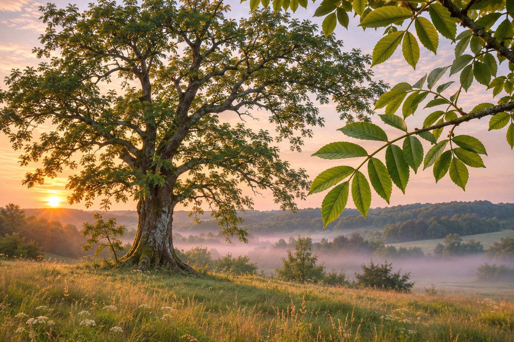
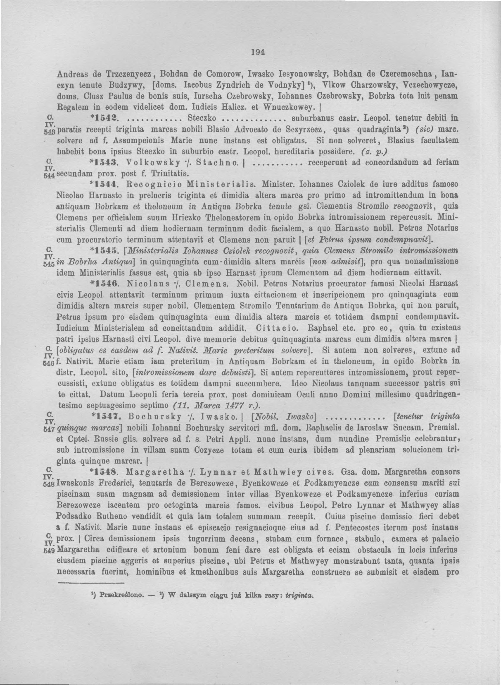

Say it
Jesionowski
yeh-shoh-NOF-skee
Four syllables, with the stress on NOF. The first consonant sounds like English y. The Polish si here gives a softer sh sound, and w sounds like f before s.
Approximate Polish IPA [jɛ.ɕɔˈnɔf.ski]
The family roots atlas
Follow Jesionowski through Polish place names, old handwriting, and modern population records. Then begin a branch with one person you can trace.
Explore the name
01 / Language
Polish records preserve several forms of the name. Learning how it sounds today helps when a record uses an older spelling or a different language.
Say it
yeh-shoh-NOF-skee
Four syllables, with the stress on NOF. The first consonant sounds like English y. The Polish si here gives a softer sh sound, and w sounds like f before s.
Approximate Polish IPA [jɛ.ɕɔˈnɔf.ski]
Search its forms
The traditional feminine form is Jesionowska. The Institute also records Jesionowski as a form used by women. Look for both in parish and civil records.
Try Jasionowski and Jasinowski as separate search leads. The dictionary cross-references them, and a record still needs matching places, dates, or relatives to establish identity.
Look further back
In Polish, jesion can refer to both the ash tree and its timber. European ash is called jesion wyniosły. This is the tree that inspired our crest.
The word root
The tree word appears in writing before the earliest surname record here. A place-name origin explains how a word for a tree can end up in a family name.
The Polish Academy’s dictionary dates the form jasień to 1394. It traces modern jesion to Proto-Slavic *(j)asenъ and *(j)asenь. The asterisk marks a form linguists reconstructed.
One surname dictionary connects the name to places called Jesionowo, from the word for ash. The Polish Academy proposes Jasionów and Jasionowa, now Jasionna, as other place-name leads.
The Academy divides the name as Jesionow‑ski. Here ‑ski marks a connection to a place. The 1477 court record gives us the written form Iesyonowsky.
02 / Geography
The references offer different starting points. The right place to search for a family branch is the one named in that branch’s own records.
A 1997 study of early Polish surnames groups Jesionowski with Jasionowski and Jasieniowski and suggests the historical place forms Jasienow and Jasionow in the southeastern borderlands. Its place spellings are useful when searching old maps and records.
Polish surname dictionary · Dictionary of American Family Names · 1997 study, printed page 67 · Haczów heritage program

03 / The paper trail
These are dated sightings in dictionaries, register transcriptions, and collections. Each comes from a different source. A family connection takes records that link one person to the next.
1477
On January 3, 1477, a court record from Lwów (present-day Lviv, Ukraine) named Iwasko Iesyonowsky. In the 1891 printed transcription of the register, entry 1541 begins on page 193 and his name appears on the first line of page 194. This is the earliest form listed under Jesionowski in the Institute’s surname dictionary.
Court records, volume XV, entry 1541 · Read the Source Book entry · Printed page 193 with the date · Old Polish name dictionary, volume II, page 454

1565
The Jamiński Indexing Team lists Stanisław Jesionowski in Brzozówka, under Mięckie (Netta). Its index comes from a 1683 copy of the 1565 survey. The year dates the survey, and the searchable spelling comes from a modern index.
1679
The Institute’s printed dictionary lists the modern spelling in 1679 and places the citation in Warmia.
1790
The Łomża baptism index gives Catharina Brigitta Jesionowska and names her parents as Casimirus and Agnes. The 1820 Śniadowo bride’s parents were Andrzej and Urszula.
Łomża onomasticon · Baptism index, reference 1098 · Register scans
1820–24
Marriage entry 3 of 1820 identifies Katarzyna Jesionowska of Jakać Stara and her parents. Entry 5 of 1824 identifies Brygida Jesionowska and her parents in connection with Zalesie Wypychy. A regional surname catalogue publishes excerpts from both records.
Łomża surname catalogue, PDF pp. 53–54 · See the two recorded households
1880–93
The Łomża index lists Soszka Jesionowska in 1880, act 11, and Owsiej Gerszon Jesionowski in 1886, act 20. It also lists Wulf Ick Jesionowski in separate 1891 and 1893 entries. The original records can help distinguish same-name entries.
1921
A biography of Alfred Jesionowski records that his father, Wojciech (Albert), was born in Wipsowo, then known as Wieps. The family’s German-recorded spelling, Jeschinowski, was changed to Jesionowski by order of the Poznań voivode on January 28, 1921. This is a documented spelling change for that specific household.
Institute of National Remembrance biography, printed page 6 · Read Alfred’s enrollment card
1926
The Polska 1926 index identifies Stanisław Jesionowski on the Olszaki elementary-school sheet, volume 59, page 221. It belongs to the Polish declarations presented to President Calvin Coolidge for the U.S. sesquicentennial.
Indexed signature · Read the Source Book entry · Original sheet at the Library of Congress · View the signature close up · Library of Congress collection
1943
The May 15 issue of Polska Walcząca prints three entries under Jesionowski and Jesionowska associated with Warsaw and Tehran. The printed entries give researchers names and places to follow in separate records.
1942–46
A U.S. National Archives finding aid for Missouri alien statements lists Francis Jesionowski with Warsaw as his birthplace. The index gives researchers a lead for requesting the underlying statement.
04 / People who carry it
These snapshots count people under particular spellings at particular dates. They show where the name appears in official data. Family branches on this site rely on records that identify relationships. Explore the name today and meet other researchers.
Poland · PESEL register
| Year | Jesionowski | Jesionowska | Both |
|---|---|---|---|
| 2020 | 975 | 957 | 1,932 |
| 2021 | 978 | 947 | 1,925 |
| 2022 | 981 | 947 | 1,928 |
| 2023 | 977 | 936 | 1,913 |
| 2024 | 970 | 935 | 1,905 |
| 2025 | 957 | 932 | 1,889 |
| 2026 | 955 | 925 | 1,880 |
The January 20, 2026 snapshot counts 947 men and 8 women under Jesionowski, and 925 women under Jesionowska. The series uses Ministry of Digital Affairs data as transcribed by PolskieNazwiska. It counts living PESEL registrants by current surname.
Ministry dataset · Jesionowski rows · Jesionowska rows
1990 · 1,898. Kazimierz Rymut’s dictionary combines Jesionowski and Jesionowska under one heading. It used the 1990 PESEL records, which covered about 34.4 million of Poland’s 37.4 million people at the time. The largest counts included the former Gdańsk (228), Toruń (170), and Łódź (137) voivodeships.
2002 · 1,987. The Nomina register lookup gives 987 for Jesionowski and 1,000 for Jesionowska. The two exact spellings are added here for comparison.
2014 · 1,813. The Institute’s grouped entry shows its highest counts in Kuyavian-Pomeranian (389), Pomeranian (251), and Masovian (218), together about 47% of the entry.
The 1990 and 2014 dictionaries group the surname forms. Register coverage and regional borders also differ across the snapshots.
Rymut’s printed entry, page 355 · 1990 register dates · 1990 register coverage · Rymut’s 2002 register dictionary · 2014 regional counts · 2014 methodology
United States · Census
| Year | Count | Rank |
|---|---|---|
| 2000 | 58,692 | |
| 2010 | 60,505 | |
| 2020 | 66,499 |
The count rose by ten from 2000 to 2010, then fell by twelve in 2020. The rate fell from about 0.12 to 0.107 per 100,000 people between 2000 and 2020. The Census Bureau releases names recorded at least 100 times. Jesionowska does not appear in these three national tables, so they cannot give its count.
U.S. Census Bureau surname releases
Statistics Norway’s 2025 population snapshot shows four people under Jesionowski and four under Jesionowska. These are separate exact-spelling counts from the Norwegian national register.
Statistics Norway names release · Jesionowski result · Jesionowska result
05 / One branch at a time
One marriage record can name two generations. Start from a person and place you already know, then look for records that name a relationship. A birth or marriage record may sit with a civil registry, a parish, or a state archive depending on its date and place.
Śniadowo · 1820 · Entry 3
The published excerpt names Andrzej Jesionowski and Urszula as Katarzyna Jesionowska’s parents. It gives Jakać Stara and cites a baptism certificate from Zambrów. The marriage index names Stanisław Swierdzewski as Katarzyna’s husband.
Śniadowo · 1824 · Entry 5
The published excerpt names Paweł Jesionowski and Kunegunda née Cendrowska as Brygida Jesionowska’s parents and gives Zalesie Wypychy. The baptism index also names Brygida’s twin, Balbina, in Jakać Młoda.
Published surname catalogue, PDF pp. 53–54
The excerpts establish each parent–child relationship separately. Any connection between these households or to our family branch is an open question.
Use initials if you prefer. Entries stay on this page, and you can download a plain-text copy to keep. The site sends no worksheet entries to a server.
06 / A living emblem
European ash has featherlike compound leaves and winged seeds called keys. In our crest, the branches stand for different ways to grow, the roots for trust, and the north star for the futures we can choose together.
Historical heraldry offers a separate research lead. Tadeusz Gajl’s armorial index lists Jesionowski under Kościesza. A claim for any family branch would need a documented line of descent.

07 / Symbolism & interpretation
“One who comes from the land of ash trees” is our poetic reading of the name. It begins with a Polish word for a living tree and the places that may have given the surname its shape.
The word root and place-name evidence tell one story. The Eddas and other European traditions tell others. Our family draws on these images to express a purpose of our own. We bring what we imagine and hold sacred into how we live on earth.
Read our family mythos · Polish Academy surname entry · Dictionary of American Family Names
In Völuspá 19, the ash stands above Urðr’s well, and dew falls from it into the valleys. The image moves both ways. The tree reaches upward and gives back to the ground below.
Grímnismál 31 describes three roots reaching toward the worlds of humans, frost giants, and Hel. Snorri’s Gylfaginning gives a different account of the roots and describes the Norns tending the tree with water from the well and clay from around it. In those stories, even the tree that holds worlds together depends on care.
In our family’s reading, connection is work we keep doing.
Eddic poems and commentary · Snorri’s Gylfaginning, chapters 15–16
European ash has black winter buds and paired leaves, each divided into many leaflets. Its timber is valued for strength and flexibility. We take that combination as an image of adapting under strain while staying grounded in what we value.
In parts of Britain, folklore linked a person’s hoped-for recovery to a split ash sapling knitting back together. We read that old image as a way to think about repairing trust. It takes attention long after the first gesture.
Ash bears winged fruits called keys. Each holds a seed the wind can carry beyond the parent tree. We see a parallel in the things a family passes on. A story, a skill, or an act of care can find a life beyond the place it began.
Ash appears among Ireland’s legendary guardian trees and in traditions around sacred wells. In a real woodland, ash keys feed birds and the bark gives lichens a place to grow. The tree’s value includes the lives it makes room for.
Our family mythos
We are here to connect heaven and earth.
We root ourselves in the stories we can carry honestly.
We reach toward futures that make room for different minds.
We give those hopes a place to grow in what we do together.
In our bookplate, purple holds the last of the night and gold brings the first light down to the roots. The north star offers a direction. The tree is where we do the work.
The mythos is our contemporary family interpretation. Our documented surname history lives in the historical records, and the possible places behind the name are in the place-name research.